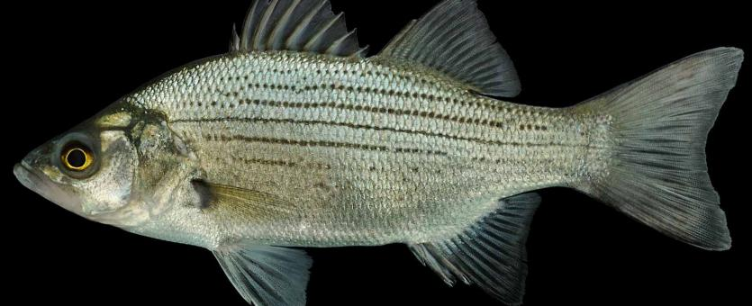
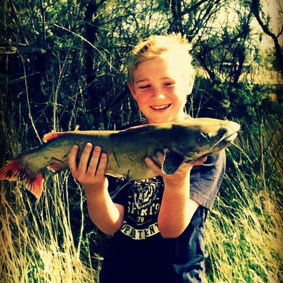
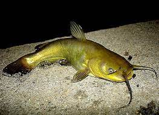
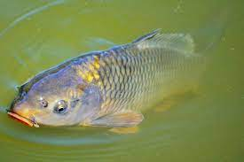

Also Known as Sand Bass it is one of the most popular choices for fisherman here. This is because they are safe to
eat and they fight well and they flock in schools, that means if you catch one you catch many.

Channel Catfish
These are probably the most sought after fish. They can grow to be very big and are tremendous fighters. You
can catch a real monster if you are going for a Channel cat, but they are not the most common catfish in the
lake so it can be tricky to catch them at times.

Yellow Bullhead Catfish
Probably the most common Catfish in the lake they do not get very big and they are less finicky than the Channel
Catfish. If you are going for Channel Cats often times you will catch these guys. They fight well for their
size and are easy to catch so they are fun if you are fishing with your kids.

Common Carp
Common Carp are a plague on utah lake, they eat the natural vegetation making the lake muddier and less appealing
they outcompete the endangered June Sucker that only lives naturally in this lake and they are ugly fish to
top it off. Their are large netting operations in the lake to try to remove as much carp as possible but
they seem to breed faster than they can be removed. That being said they get big and fight hard and they are
the most abundant fish in the lake so they are still fun to catch.

Above are the fish you will likely catch but I will add the honorable mentions of fish that live in the lake but are much
more rare: June Sucker, Walleye, Largemouth Bass, Green Sunfish and White Crappie.